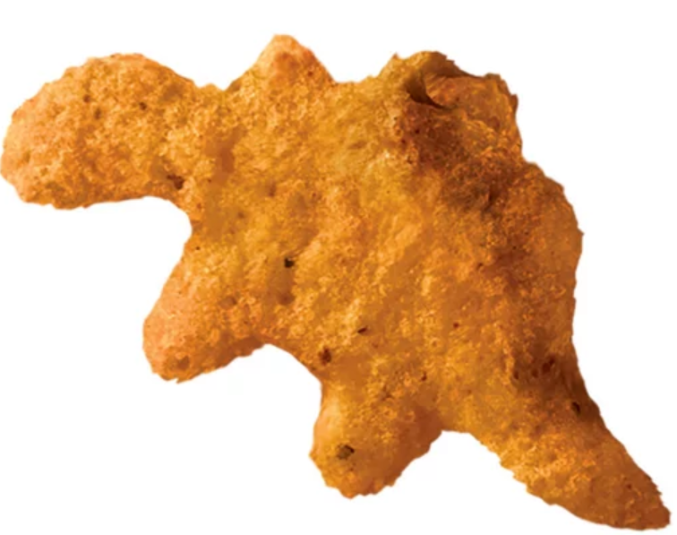

Lab 4 - Pseudocoding
- Step 1: Finding a plastic bottle.
Obtain a plastic bottle by consuming the contents of a drink or finding one in the wild.
- Step 2: Locate and discover a blue recycling bin.
- Step 3: Throwing away the bottle.
Position your arm and hand holding a plastic water bottle over the blue bin's hole.
Make sure to align the bottle vertically to ensure that it arrives at its destination.
When ready, release your grip on the water bottle and make sure that it falls into the blue bin's hole.
- Failsafe: If you miss the blue bin's hole.
If you miss the blue bin's hole, find the plastic bottle and grab it.
Once you find yourself with the plasitc bottle again, rerturn to step 3 and try again.
Everday Task Pseudocode: Recycling a Plastic Bottle
Check if the blue bin has the word "recycle" on it.
Check if the blue bin has three arrows in the shape of a triangle.
Optionally, check if the blue bin has pictures of plastic bottles, aluminum cans, or cardboard.
Selected Image
Reflection
Put your reflections about this assignment here. How did it go? What kind of energy did you put into the assignment?
Javascript Results
// Checkers Pseudocode Tasks:
// To print the board for each turn.
// Add all the pieces for the entire game.
// Players decide who is team red and team black.
// Flip a coin to decide who will go first.
// Whoever wins the coin flips is able to move their checker piece first diagonally.
// The second will then make the next diagonal move.
// Repeat turns to capture your opponent’s checker pieces by jumping over them.
// If a player’s checker reaches the end of the board it will become a king piece.
// A King Piece will be able to move diagonally backwards and forwards.
// A winning player is decided once a player captures all of the checker pieces of the opposing player.